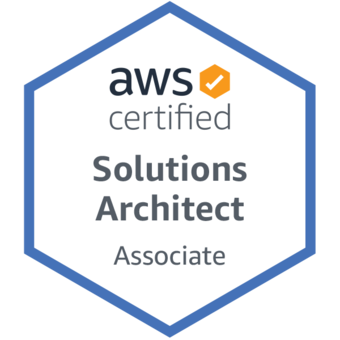
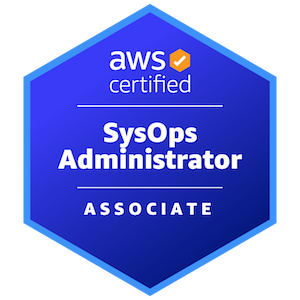

I, Madhusudhan Sarvodhaya Dhayanithi, would like to solve problems on a large scale and in a secure way. I am looking forward to working in a collaborative team that values Software Engineering best practices and enjoys challenges in solving problems together.
- Dynamic Full Stack Developer with a proven track record of individual contribution and leadership in delivering cutting-edge solutions. Proficient across Cloud, Mobile, Web, Automation, Database, and DevOps domains. Skilled in architecting robust solutions and implementing software design principles and patterns. Dedicated to staying abreast of emerging technologies and maintaining a keen focus on continuous improvement.
Kotlin
Java 17
Typescript
Python3
golang
C++
Android Jetpack
Angular
J2EE
Spring Boot
Gradle
Yarn
Maven
npm
CMake
Selenium
Appium
Cucumber
Mockito
Robolectric
Espresso
Cypress
UIAutomator
Jenkins
Git
Docker Compose
Bash Scripting
PostgreSQL
MongoDB
Ubuntu
Wireshark
MobSF
Perfetto
Android Profilers
Eclipse MAT
SonarQube
Mend
AWS
IntelliJ
Crucible
Github
Trimble Inc, Chennai, India
Software Engineering Specialist
07/2017 to Till Date
- Spearheaded platform engineering efforts, focusing on product backlog management, code quality enhancement, and technical debt reduction
- Pioneered modularization strategies for Android apps, optimizing build processes and enhancing scalability.
- Test & Build ninja – Guard the quality of test code through reviews and maintain test pyramid through 3 amigos discussion
- Work and Collaborate with Community of Practices across multiple locations and technology stack - Android, Web, Automation and DevSecOps
- Optimized Gradle build tasks for faster CI by implementing Gradle Build Cache server and customizing build, lint and test tasks
- Help the Product Owners refine features with insights from technical perspective
- Mentor peers and programmers on Modern Android Development with Jetpack suite of libraries and Kotlin Coroutines & Flow
- For Engineering benefits, modularize android apps with Kotlin first strategy
- Monitor the test pyramid and follow BDD and write Unit and Automation Tests to cover important product workflows
- Be a performance champion - Identify, fix and prevent performance overheads and Memory Leaks on Android Apps via Heap Dump Analysis
- Mentor team members on automation testing best practices and tools for Android, Web, API
- Perform SAST analysis on code base every quarter - to identify vulnerabilities in 3rd party libraries used by our product
- Create/Update docker images for Android Builds when there are changes to JDK/SDK
- Actively engaged in cybersecurity discussions and advocated for secure coding practices aligned with OWASP guidelines.
- Implemented Fluent APIs & Serenity screenplay pattern, Explored Cypress 7x for web testing
Cognizant Technology Solutions, Chennai, India
Technology Architect
02/2016 to 06/2017
- Accountable for Software Quality – SAST & DAST. Used CAST and Veracode and helped the development teams fix the vulnerabilities
- Orchestrated the migration of legacy J2EE applications to lightweight Angular and Spring REST microservices, ensuring seamless functionality and performance.
- Drove software quality initiatives through static and dynamic analysis tools, fostering a culture of continuous improvement and security awareness.
- Mentored junior programmers on Java 8 functional programming, fostering a culture of knowledge sharing and skill development.
Caterpillar Ltd, Chennai, India
Engineer
06/2014 to 02/2016
- Collaborated closely with UX team to implement optimized Android layouts and reusable UI components.
- Understand and work on OpenGL based Texture Views for 3D Model rendering
- Accountable for the android license module which runs a foreground service that talks to the underlying hardware chip via JNI
- Created a jira gadget for Defect Rate analysis using D3 charts and Atlassian SDK
Cognizant Technology Solutions, Chennai, India
Technology Specialist
06/2005 to 06/2014
- Led full-stack Java development efforts for various J2EE web projects with JSF, EJBs and DB2, delivering robust and scalable solutions
- Played a key role in the development and testing of SOAP-based web services for web and android apps
- Developed an android application with NFC payments options for FirstData along with Google
- Created Jenkins plugins for Android Lint and automated iOS builds on a mac mini slave
- Created training materials on Android Development for internal purposes
- Created browser games with Drag & Drop, Offline capabilities of HTML5, JQuery
- Worked at client offices at USA for Schneider Logistics (Greenbay), FirstData Banking (Atlanta), Academy Sports (Katy)


- 
- 